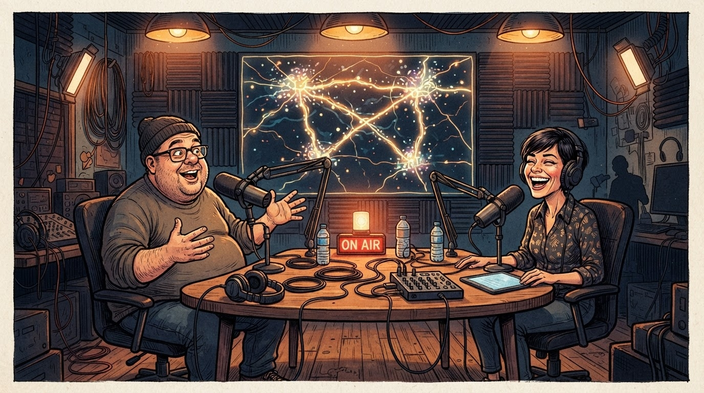
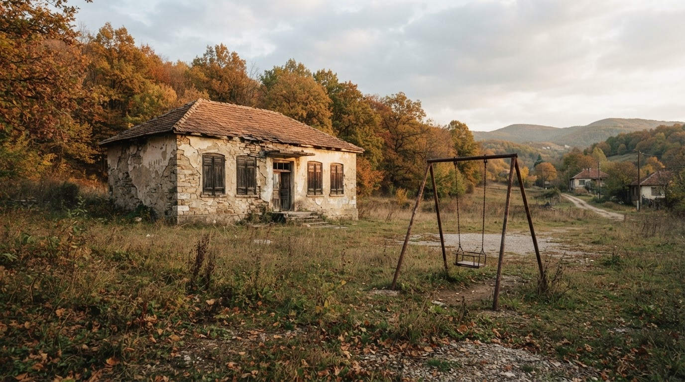

Edukim
Gazeta Satirike e Kosovës dhe Shqipërisë — lajme që nuk duhet t'i besoni, por i lexoni gjithsesi
Numri i nxënësve bie me mbi 37 mijë në shtatë vjet, por komunikatat rriten çdo vit. Redaksia jonë llogarit sa klasa duhen për një klasë.

Ministria e Arsimit dhe Shkencës konfirmoi se janë shqyrtuar 14 kërkesa për ndërprerjen e veprimtarisë edukativo-arsimore të shkollave "për shkak të numrit të pamjaftueshëm të nxënësve"; në nivel vendi, numri i nxënësve është ulur me mbi 37 mijë që nga viti shkollor 2019/20.
Departamenti ynë i demografisë shkollore (një regjistër i verdhë dhe një laps i mprehur nga viti 2019) konfirmon se Kosova ka zbuluar një metodë krejt të re të "optimizimit institucional": kur klasa nuk mbushet me nxënës, e mbushni me komunikata.
Sipas burimeve tona (një drejtor komune që numëron karriget bosh me gisht), formula është e thjeshtë: aq sa bie numri i nxënësve, aq rritet numri i termave zyrtarë për të mos thënë "mbyllje". Deri tani janë përdorur "ristrukturim", "konsolidim", "riorganizim funksional" dhe, së fundi, thjesht "socializim më i mirë".
"Ne nuk e mbyllim shkollën — e çojmë atë në pushim të përhershëm pedagogjik." — një zyrtar komunal, duke firmosur vendimin me stilolapsin e fundit që mbeti pa u marrë nga dikush
Redaksia jonë (një tabelë e zezë e vjetër dhe një shkumës gjysmë e konsumuar) llogarit se çdo shkollë e mbyllur prodhon mesatarisht 1 komision studimi, 2 deklarata për shtyp dhe 0.3 zgjidhje reale — një raport që sipas standardeve tona akademike konsiderohet "ekselencë administrative".
Në Podujevë, ku janë mbyllur katër shkolla brenda tre vjetësh, banorët thonë se fëmijët tani "socializohen më mirë" — një term që përkthehet praktikisht në "ecin më shumë në këmbë deri te shkolla tjetër". Redaksia jonë propozon një lëndë të re opsionale: "Gjeografia e shkollës më të afërt".
Deri në vitin e ardhshëm shkollor, redaksia jonë rekomandon që çdo prind i ri të llogarisë me kohë distancën deri te shkolla më e afërt — statistikisht, është më e sigurt sesa të llogarisësh me buxhetin e ministrisë.